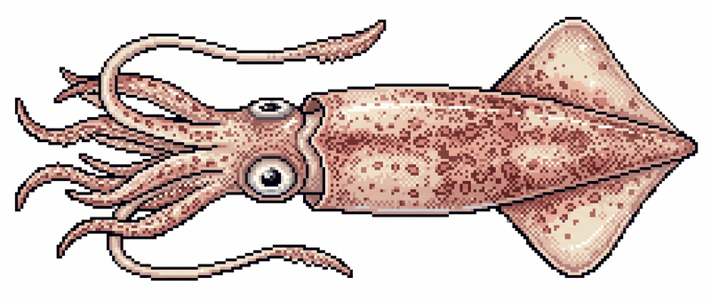
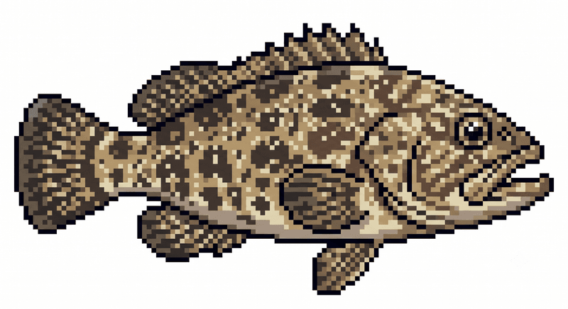
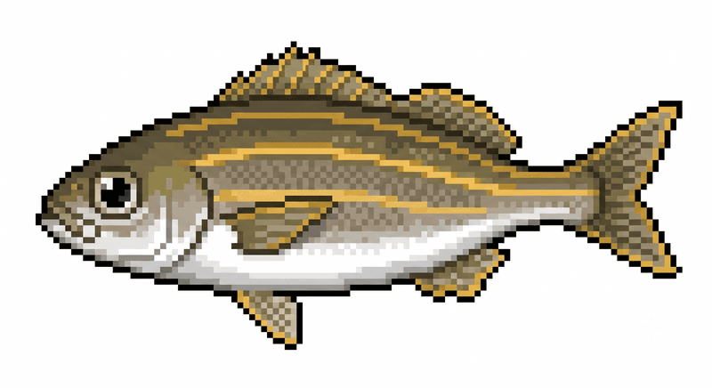
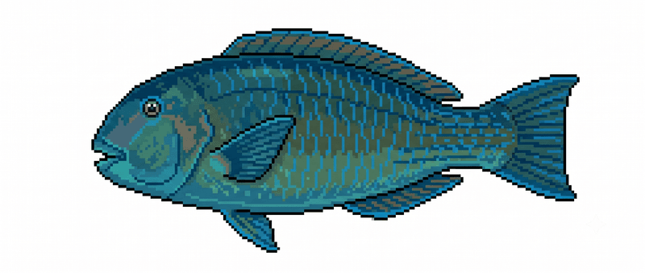

把虎井嶼的海味，急凍鎖鮮、宅配到你家餐桌。
有興趣・敲碗預購 （籌備中）why us
手釣、三去、真空、急凍——不是空喊「新鮮」，而是每一步都說得出道理。
逐隻釣上，沒有網具擠壓、沒有掙扎乳酸，魚體完整、肉質純淨緊實。
去鱗、去鰓、去內臟並洗淨血水，真空隔絕空氣，截斷九成腥味來源。
−30～−40°C 瞬凍，細胞不破、解凍不出水，口感和剛上岸幾乎一樣。
連袋沖水解凍、擦乾就能下鍋，免去鱗掏內臟的髒亂，新手也不怕。
in season
跟著澎湖的海走，當季才出。每種魚的肉質、吃法我們都講得出來。

盛產期肉質最脆甜，川燙冰鎮、現撈沙西米或夜釣現吃都對味。

秋季水溫適中，肉質Ｑ彈、魚皮膠質豐厚，清蒸或煮湯最能吃到鮮甜。

夏季產季，肉質細軟鮮甜；乾淨的白肉，鹽烤、香煎特別香。

又名寒鯛，肉質清甜、肉多刺少，魚頭富含膠質，煮薑絲魚湯一絕。